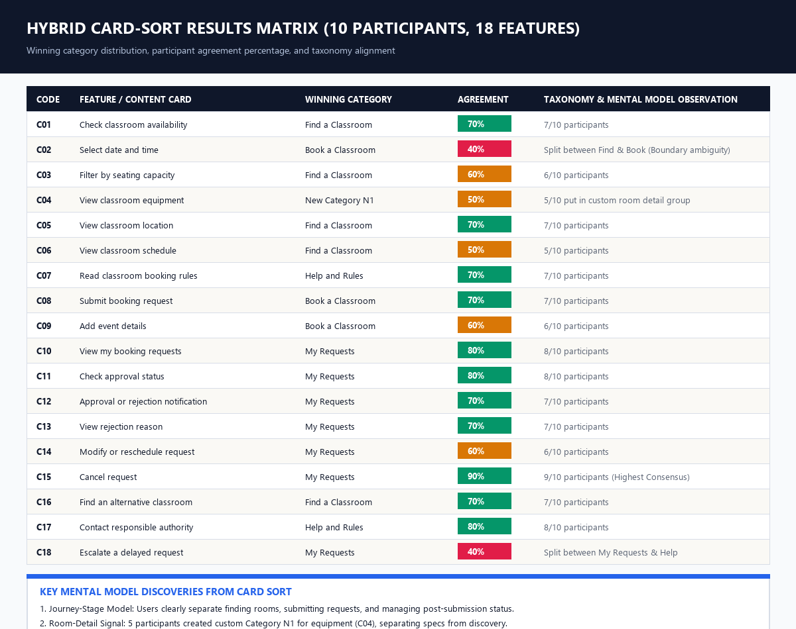
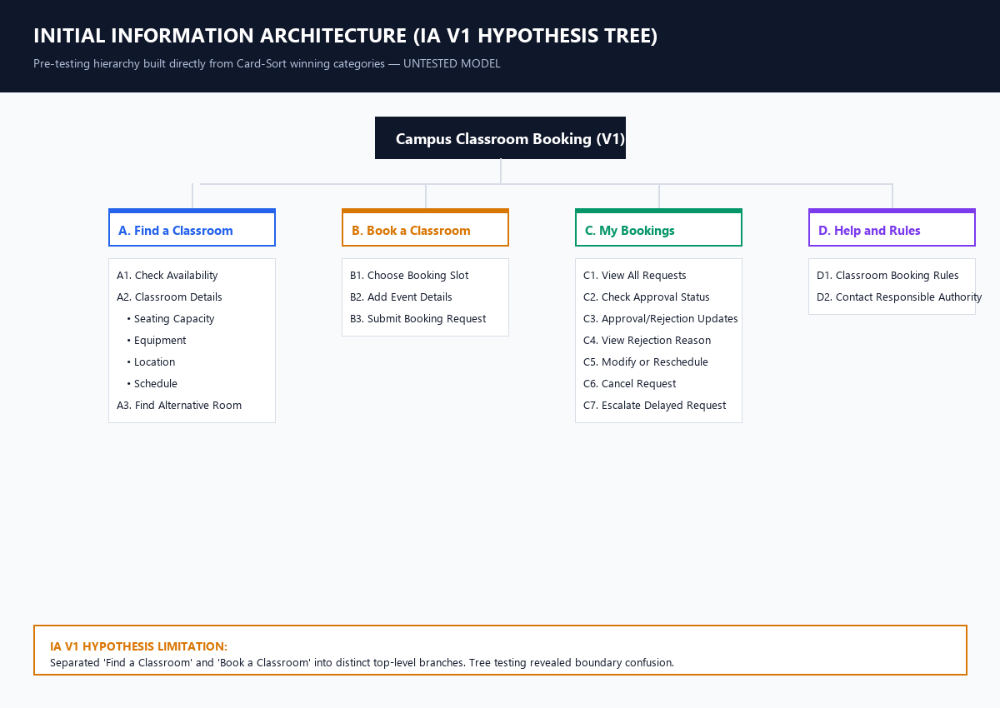
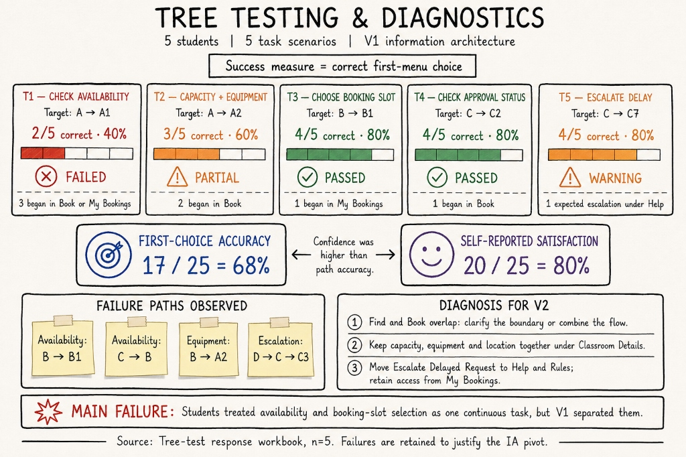
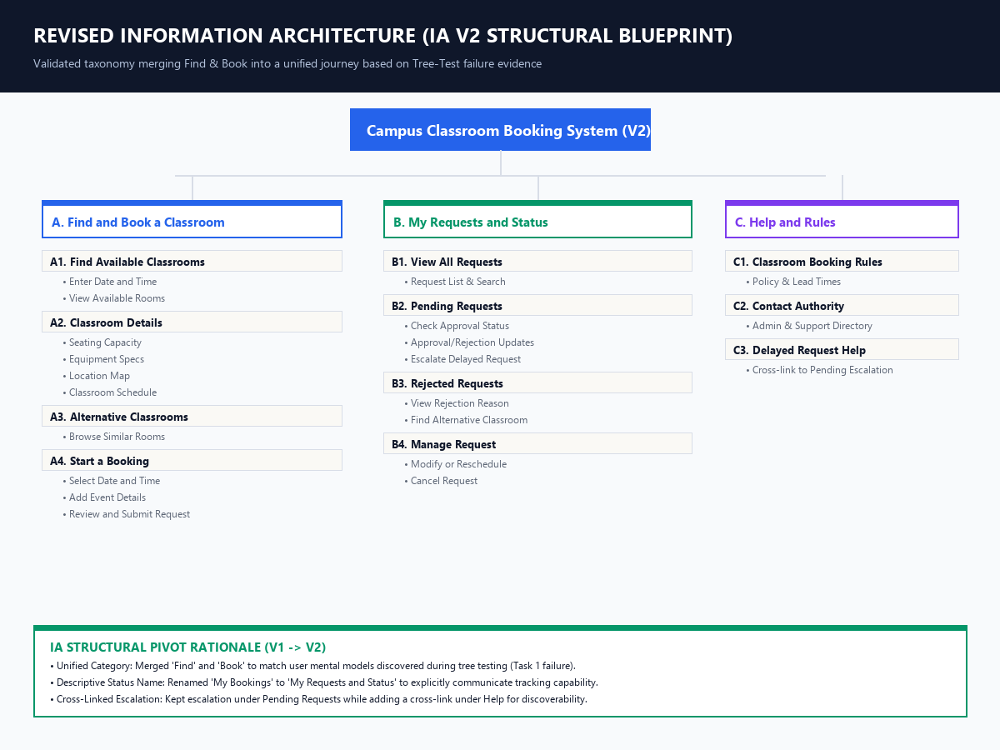
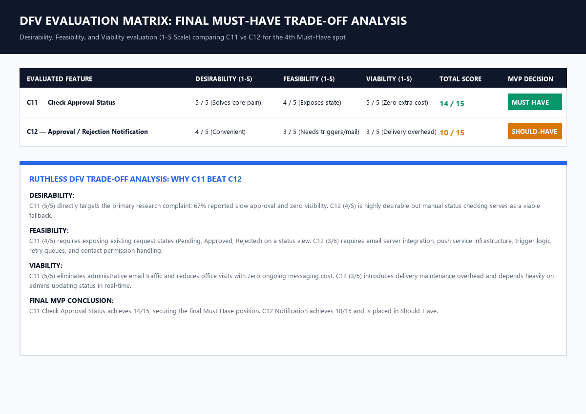

Researching and restructuring the fragmented campus classroom-booking experience
Student organizers currently depend on administration emails, faculty contacts and office visits to book classrooms. Availability is unclear, approval is slow, and users cannot easily tell what is happening after submitting a request. This project uses research, card sorting, tree testing and prioritization to create a validated structural blueprint before any interface is designed.
17
Survey Respondents
10
Card-Sort Participants
5
Tree-Test Participants
18
Features Evaluated
4
MVP Must-Haves
Phase 1: Empathy & Definition
1. Problem Space & Definition
Campus classroom booking is currently fragmented across administrative emails, faculty contacts and physical office visits. Student organizers frequently begin the process without knowing which rooms are available, whether a request conflicts with another booking, or who holds responsibility for final sign-off.
Final Problem Statement
Student organizers need a dependable way to identify suitable available classrooms and understand approval progress because the current email, faculty and office-based process hides availability and status, leading to repeated follow-ups, booking conflicts and cancelled or postponed events.
How Might We Statement
How might we help student organizers find a suitable available classroom and track its approval without relying on repeated emails, faculty messages or office visits?
1.1 Core Structural Distinctions
Dimension
Current State Observation
Architectural Implication
Root Problem
Availability and approval status information are completely hidden from requesters.
System must expose room schedules and transparent status states.
Consequences
Wasted student time, administrative overload, booking conflicts, cancelled/postponed events.
Solution must protect event planning dates through early conflict detection.
Structural Response
Create a unified Information Architecture connecting room discovery directly to booking and status tracking.
Structure precedes interface; focus on mental model taxonomy before screens.
1.2 Assumption-Led Proto-Persona
Before gathering research, we synthesized initial institutional assumptions into a proto-persona to establish clear hypotheses regarding user goals, behaviors, and anticipated pain points.
MA
Proto-Persona: Mandar
The Assumed Student Organizer
Created Before Research — Based on Assumptions
Context & Role
Student who occasionally organizes club meetings, workshops or group activities.
Needs classrooms outside normal academic timetable hours.
Starts by asking peers, emailing administration, or messaging faculty contacts.
Assumed Expectations
Assumes an available classroom can be identified quickly.
Expects approval to happen asynchronously through email.
Becomes frustrated by unclear administrative ownership and slow replies.
Wants faster approval and fewer paperwork steps.
Is comfortable utilizing modern digital web tools.
Assumptions to Validate
Classroom availability is the primary booking difficulty.
Email is the most common booking channel used by students.
Users desire a single digital process rather than multi-channel contacts.
Student event organizers represent the primary affected segment.
1.3 Primary Research & Subgroup Analysis
Primary evidence was gathered through a structured participant survey comprising 17 real responses (16 students, 1 club coordinator). Within the total cohort, 12 respondents had direct experience attempting to book campus classrooms, while 5 had no prior booking experience.
Booking Channel Utilized
Respondent Count
Percentage of Total Sample
Channel Characteristics & Operational Friction
Administration Email
7 of 17
41.2%
Unstructured threads; no automatic logging or SLA tracking.
Contact Faculty Member
6 of 17
35.3%
Relies on personal faculty favors; bypasses central room oversight.
Visit Administration Office
4 of 17
23.5%
Requires physical travel during working hours; paper-based queues.
Methodological Justification for Subgroup Isolation
Participants without prior booking experience (5 respondents) occasionally rated process satisfaction higher because they had never navigated administrative hurdles. Therefore, to ensure data integrity, all pain statistics and satisfaction calculations focus exclusively on the 12 respondents with direct booking experience.
75%
Hidden Availability (9/12)
67%
Experienced Slow Approval (8/12)
58%
Process Took >30 Mins / Days (7/12)
58%
Cancelled / Postponed Events (7/12)
67%
Rated Process 1 or 2 out of 5 (8/12)
2.42
Avg Satisfaction (/5 Score)
1.4 Research-Grounded User Persona
Unlike the initial proto-persona, this composite persona synthesizes empirical patterns and quantitative data derived directly from the survey responses.
MA
Research Persona: Mandar
Composite Student Organizer
Validated by Research
* “Mandar” is an explicit composite label. Academic major, age, and demographic metrics were intentionally uncollected in the primary survey and are not fabricated.
Validated Goals
Identify an available and suitable classroom quickly. 75% Pain
Avoid contacting multiple administrative offices or faculty contacts.
Submit one clear, structured digital request.
Know whether a request is pending, approved or rejected without emailing.
Protect event schedules from last-minute room conflicts. 58% Cancelled
Observed Behaviours
Emails administration office with event details. 41% Channel
Reaches out to faculty contacts for manual room favors. 35% Channel
Visits administration office physically to ask about availability. 24% Channel
Waits hours or days without receiving approval status updates. 67% Slow Approval
Sends manual reminder follow-ups when replies stall.
Reschedules or cancels student events when room confirmation fails. 58% Impact
Frustrations & Needs
Frustration: Cannot see room schedules before requesting. 75%
Frustration: Approval delays consume more than 30 mins to days. 58%
Frustration: Paperwork and repeated administrative back-and-forth.
Figure 2: User Journey Map & Emotion Curve. Tracing Mandar's 7 chronological stages from event definition (+2 score) to late conflict discovery (-5 score low point).
Stage
User Action
User Thought
Pain or Friction
Emotion Score
1. Event Need Arises
Defines event, date, time & expected attendance
“This should be manageable.”
No friction yet
+2 (Hopeful)
2. Search Availability
Asks around and checks informal schedules
“Which classroom is actually free?”
No reliable availability source
0 (Uncertain)
3. Choose Channel
Chooses email, faculty contact or office visit
“Who should I contact?”
Fragmented administrative ownership
-1 (Confused)
4. Submit Request
Shares date, time and event purpose
“I hope I included everything.”
Inconsistent process & paperwork
0 (Cautiously Hopeful)
5. Wait & Follow Up
Checks messages and sends reminders
“Is anyone processing this?”
Zero status visibility while waiting
-3 (Anxious)
6. Conflict Discovered
Searches for another room or postpones
“Why did I only learn this now?”
Conflict discovered after waiting
-5 (LOWEST POINT)
7. Final Outcome
Confirms room or updates participants
“At least I finally know.”
Recovery still costs time & effort
+2 / -3
The Core Pain Point
The core pain is not simply filling out a booking request. It is being unable to see reliable classroom availability or approval progress, which forces users to wait, follow up and sometimes discover conflicts too late to protect their event plans.
1.7 User Stories Directly Responding to Journey Dip
User Story 1 · Discovery
“As Mandar, a student organizer, I want to see which classrooms are available for my required date and time so that I can choose a realistic option without contacting multiple people.”
Directly Responds To: Stage 2 & 6 Journey Friction (Hidden availability & late conflict discovery).
User Story 2 · Submission
“As Mandar, a student organizer, I want to submit one structured classroom request so that I do not have to rely on inconsistent emails, faculty messages or paperwork.”
Directly Responds To: Stage 3 & 4 Journey Friction (Fragmented channels & paper bureaucracy).
User Story 3 · Status Tracking
“As Mandar, a requester, I want to check the approval status of my request so that I know whether to wait, follow up or adjust my event plans.”
Directly Responds To: Stage 5 & 6 Journey Friction (Approval uncertainty & severe anxiety dip).
Phase 2: Ideate & Evaluate
2. Information Architecture & Tree Testing
2.1 Complete 18-Feature Content Inventory
To prepare for card sorting and structural synthesis, 18 conceptual features and content items were identified and coded C01 through C18.
Code
Feature / Content Item Name
Functional Scope & Purpose
C01
Check classroom availability
View real-time schedule grids to identify unbooked time slots.
C02
Select date and time
Specify target start time, end time, and date for reservation.
C03
Filter by seating capacity
Refine classroom searches by required student seating count.
C04
View classroom equipment
Inspect available AV, projectors, whiteboards, and microphones.
C05
View classroom location
Check building name, floor number, and campus zone map.
C06
View classroom schedule
Examine full weekly master schedule for a specific room.
C07
Read classroom booking rules
Review lead time policies, noise restrictions, and usage guidelines.
C08
Submit booking request
Transmit completed reservation form for administrative review.
C09
Add event details
Provide event title, description, expected headcount, and club affiliation.
C10
View my booking requests
Access personal dashboard listing past and active room requests.
C11
Check approval status
Monitor real-time request state (Pending, Approved, Rejected).
C12
Approval or rejection notification
Receive email or alert updates when request state changes.
C13
View rejection reason
Read administrative notes detailing why a request was denied.
C14
Modify or reschedule request
Update date, time, or room selection for pending/approved requests.
C15
Cancel request
Withdraw a pending or approved reservation to release space.
C16
Find an alternative classroom
Receive automated recommendations when preferred room is booked.
C17
Contact responsible authority
Identify and message the specific administrator handling approval.
C18
Escalate delayed request
Trigger escalation flag when a request exceeds target approval SLA.
2.2 Hybrid Card Sort & Mental Models
A hybrid card-sorting study was executed with 10 real student participants (6 with booking experience). Participants categorized the 18 content items across four open/closed categories: Find a Classroom, Book a Classroom, My Requests, Help and Rules, plus custom user-created categories.

Figure 3: Card-Sort Matrix Artefact. Statistical consensus distribution revealing strong agreement across 11 items (≥70%), moderate agreement across 5 items (50–60%), and high ambiguity across 2 boundary items (40%).
2.3 Initial Information Architecture (IA V1)

Figure 4: IA V1 Tree Visual. Pre-testing taxonomy separating "Find a Classroom" and "Book a Classroom" into distinct top-level menu branches.
Information Architecture Blueprint — IA V1 (Pre-Testing Baseline)
Campus Classroom Booking System (V1 Baseline Model)
To validate whether users could navigate IA V1, a text-based tree test was conducted with 5 real students across 5 realistic scenarios (25 total menu navigation decisions).

Figure 5: Tree-Test Validation Matrix. Quantitative score breakdown revealing an overall 68% direct first-menu success rate (17/25) and highlighting a major boundary failure on Task 1.
2.5 Final Validated Information Architecture (IA V2)
The IA Structural Pivot Rationale (V1 → V2)
V1 separated “Find a Classroom” and “Book a Classroom.” Tree testing showed that participants repeatedly crossed this boundary, particularly when checking availability and classroom details. V2 merged these areas into “Find and Book a Classroom,” while preserving Find and Start a Booking as second-level groups. “My Bookings” was renamed “My Requests and Status,” and delayed-request escalation was grouped with pending requests while remaining accessible through Help.

Figure 6: IA V2 Blueprint Artefact. Validated Information Architecture blueprint establishing 3 top-level categories and refined second-level groupings.
Information Architecture Blueprint — IA V2 (Validated Structural Blueprint)
To determine the 4th and final Must-Have feature, a rigorous DFV evaluation (1–5 scale) was conducted between C11 Check Approval Status and C12 Approval or Rejection Notification.

Figure 8: DFV Evaluation Matrix Artefact. Comparative score analysis selecting C11 Check Approval Status (14/15) over C12 Notification (10/15) for the final Must-Have position.
3.2 Final MVP Definition
The validated Minimum Viable Product (MVP) consists strictly of the 4 core Must-Have capabilities needed to establish a transparent classroom booking loop.
MVP Capability 1
C01 — Check Classroom Availability
Exposes real-time room schedules so organizers can identify free classrooms before initiating a request.
MVP Capability 2
C02 — Select Date and Time
Allows organizers to specify start time, end time, and event date for their target room reservation.
MVP Capability 3
C08 — Submit Booking Request
Transmits a single, structured digital booking request replacing fragmented emails and paper visits.
MVP Capability 4
C11 — Check Approval Status
Provides real-time visibility into request approval states (Pending, Approved, Rejected) to eliminate uncertainty.
3.3 Conclusion & Strategic Roadmap
By grounded research sensemaking, card sorting, tree testing, and rigorous prioritization, this project transforms a fragmented email-and-office booking process into a validated, structural blueprint (IA V2) and focused 4-capability MVP.